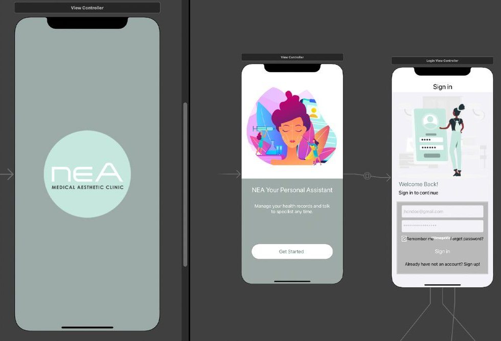
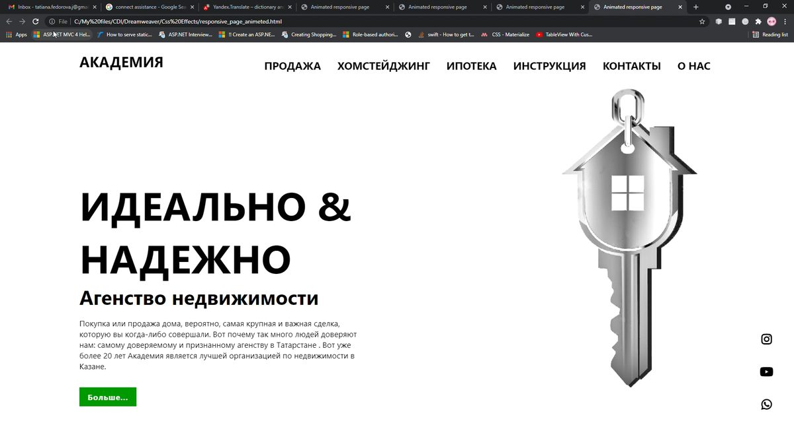

← All work
Diploma projects, 2019 – 2021
Digital & UI Design
During my Web & Mobile Development diploma I designed app and website interfaces, then built them myself. It gave me a practical understanding of how digital products come together, which I now use to design screens that are realistic to build and easy to hand off.
- Role
- UI design and front-end build
- Deliverables
- App screens and user flows, responsive website, developer-ready assets
- Tools
- Figma, Xcode, Android Studio, HTML/CSS


Why it matters for design work
Building the screens I designed taught me what makes a layout easy to develop: consistent spacing, reusable components, clear states and well-named assets. I bring that to every digital project, whether I'm designing a social campaign, a landing page or an app.
- User flows and wireframes before visual design
- Screen designs and prototypes in Figma
- Responsive layouts that adapt to any screen
- Exported assets and specs ready for developers